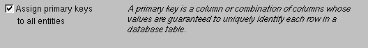

Table of Contents
Table of Contents  Next Section
Table of Contents
Next Section
Table of Contents  Previous Section
Previous Section
The basic model the wizard creates contains entities, attributes, and relationships. An entity is the part of the database-to-object mapping that associates a database table with an enterprise object class. For example, the Movie entity maps rows from the MOVIE table to Movie objects. Similarly, an attribute associates a database column with an instance variable. For example, the title attribute in the Movie entity maps the TITLE column of the MOVIE table to the title instance variable of Movie objects.
A relationship is a link between two entities that's based on attributes of the entities. For example, the Movie entity has a relationship to the MovieRole entity based on the entities' movieId attributes (although the attributes in this example have the same name in both entities, they don't have to). This relationship makes it possible to find all of a Movie's MovieRoles.
How complete the basic model is depends on how completely the schema information is inside your database server. For example, the wizard includes relationships in your model only if the server's schema information specifies foreign key definitions.
Using the options in this page, you can supplement the basic model with additional information. (Note that the wizard doesn't modify the underlying database.)

Enterprise Objects Framework uses primary keys to uniquely identify enterprise objects and to map them to the appropriate database row. Therefore, you must assign a primary key to each entity you use in your application. The wizard automatically assigns primary keys to the model if it finds primary key information in the database's schema information.
Checking this box causes the wizard to prompt you to choose primary keys that aren't defined in the database's schema information. If your database doesn't define them, the wizard later prompts you to choose primary keys.
If there are foreign key definitions in the database's schema information, the wizard includes the corresponding relationships in the basic model. However, a definition in the schema information doesn't provide enough information for the wizard to set all of a relationship's options. Checking this box causes the wizard to prompt you to provide the additional information it needs to complete the relationship configurations.
Checking this box causes the wizard to read stored procedures from the database's schema information, display them, and allow you to choose which to include in your model. Because the Movies application doesn't require the use of any stored procedures, don't check this box.
An entity maps a table to enterprise objects by storing the name of a database table (MOVIE, for example) and the name of the corresponding enterprise object class (a Java class, Movie, for example). When deciding what class to map a table to, you have two choices: EOGenericRecord or a custom class. EOGenericRecord is a class whose instances store key-value pairs that correspond to an entity's properties and the data associated with each property.
If you don't check the "Use custom enterprise objects" box, the wizard maps all your database tables to EOGenericRecord. If you do check this box, the wizard maps all your database tables to custom classes. The wizard assumes that each entity is to be represented by a custom class with the same name. For example, a table named MOVIE has an entity named Movie, whose corresponding custom class is also named Movie.
Use a custom enterprise object class only when you need to add business logic; otherwise use EOGenericRecord. The Movies application uses EOGenericRecord for the Movie entity and custom classes for the Talent and MovieRole entities. Later on, you'll use EOModeler to specify the custom classes.
Table of Contents Next Section